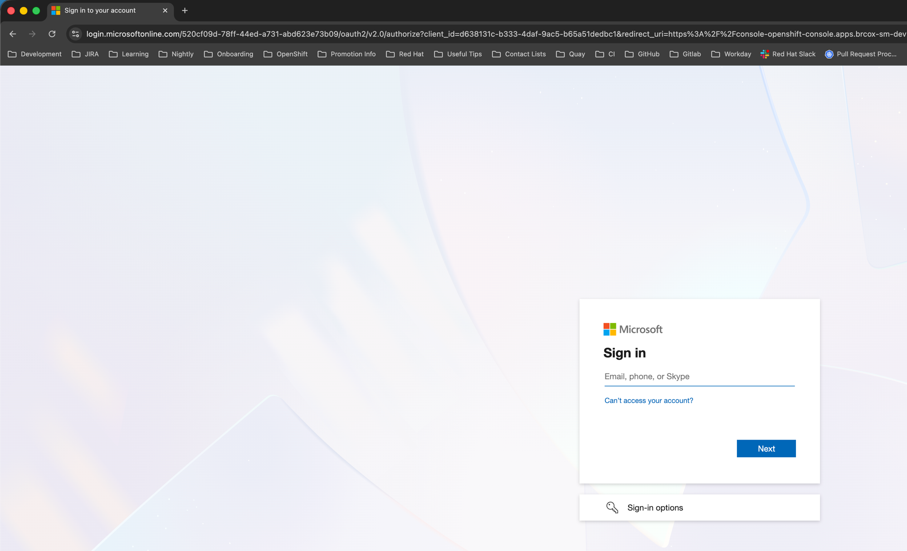
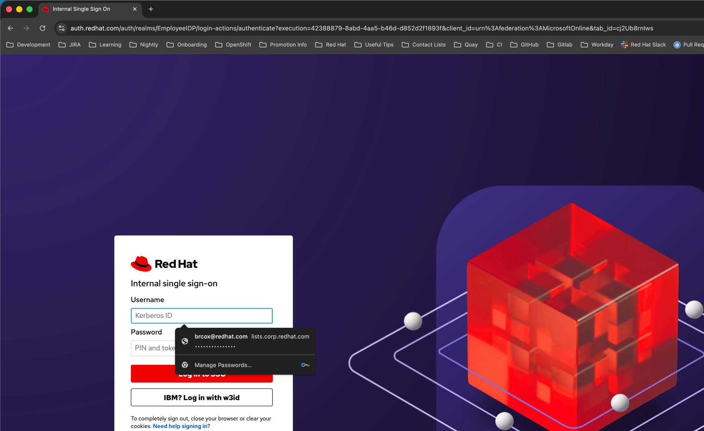
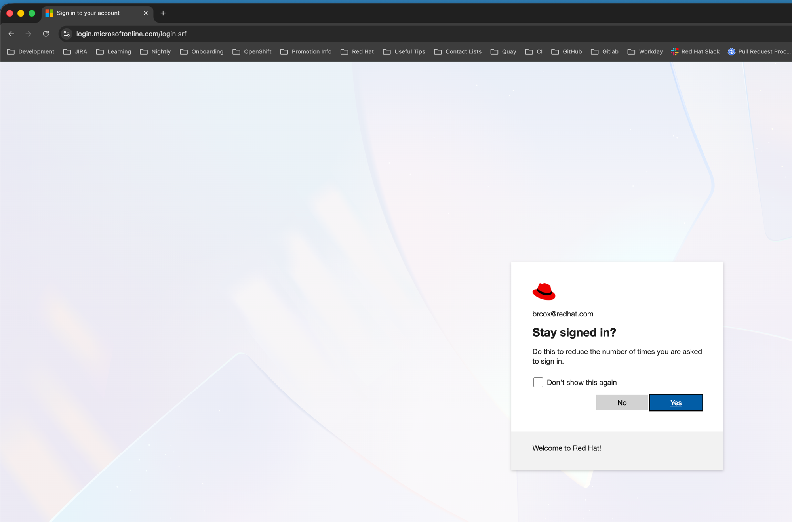
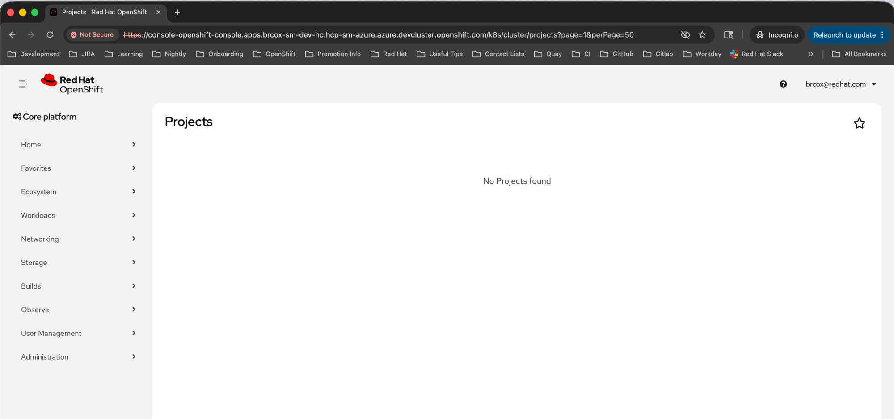

Objective: Verify that the OpenShift console redirects to Azure AD for authentication and correctly identifies the user after login.
Console URL: https://console-openshift-console.apps.brcox-sm-dev-hc.hcp-sm-azure.azure.devcluster.openshift.com
| Step | Check | Result | Evidence |
|---|---|---|---|
| 1 | Console redirects to Azure AD login | PASS | Browser navigated to login.microsoftonline.com/.../oauth2/v2.0/authorize with correct client_id |
| 2 | Azure AD federated SSO completes | PASS | Redirected to Red Hat Internal SSO (auth.redhat.com), then back to Azure AD "Stay signed in?" prompt |
| 3 | Redirect back to console after authentication | PASS | Console loaded at console-openshift-console.apps.brcox-sm-dev-hc.../k8s/cluster/projects |
| 4 | Console displays OIDC user identity | PASS | Top-right corner: br...@redhat.com |
Opened console URL in an incognito browser window. The console automatically redirected to Azure AD login with the correct client_id and redirect_uri.

Azure AD authorization endpoint with correct client_id visible in the URL bar.
After entering the @redhat.com email, Azure AD federated to the Red Hat Internal SSO for corporate authentication.

Red Hat Internal SSO (auth.redhat.com) with client_id=urn:federation:MicrosoftOnline confirming Azure AD federation.
After authenticating via Red Hat SSO, Azure AD displayed the session persistence prompt confirming successful authentication as br...@redhat.com.

Clicked “Yes” to proceed to the console.
Console loaded successfully with the OIDC user identity displayed in the top-right corner.

Console shows br...@redhat.com in the top-right corner. “No Projects found” is expected — the OIDC user has no RBAC roles assigned.
client_id and redirect_uri@redhat.com accounts, which is the expected behavior for the Red Hat Azure AD tenant